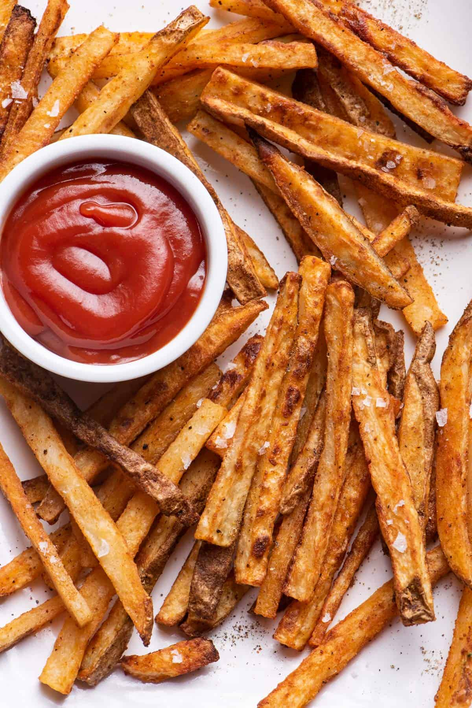

French Fries

Description:
This baked French fries recipe is an easy way to make a great side dish for burgers!
Ingredients:
- 1 large baking potato
- 1 tablespoon olive oil
- ½ teaspoon paprika
- ½ teaspoon garlic powder
- ½ teaspoon chili powder
- ½ teaspoon onion powder
Steps:
- PPreheat the oven to 450 degrees F (230 degrees C).
- Cut potato into thick wedges. Mix olive oil, paprika, garlic powder, chili powder, and onion powder together in a medium bowl. Add potato wedges and toss to coat evenly; arrange on a baking sheet.
- Bake in the preheated oven, turning once or twice, until golden brown and crispy, about 45 minutes.